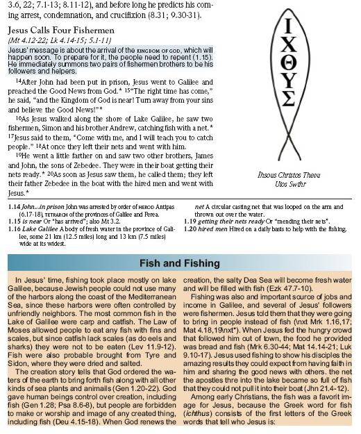

esb / esbe
Summary
- Description
-
Sidebar container.
- Syntax
-
-
USFM:
\esb \catcategory\cat*content\esbe -
USX:
<sidebar style="esb"@category">content</sidebar>- category
-
Sidebar category.
- content
-
The sidebar paragraph elements and text.
-
- Added
-
2.1
Examples
-
USFM
-
USX
Example 1. Mark 1 (CEV Learning Bible)
\v 18 At once they left their nets and went with him.
\esb \cat History\cat*
\ms Fish and Fishing
\p In Jesus' time, fishing took place mostly on lake Galilee, because Jewish
people could not use many of the harbors along the coast of the Mediterranean
Sea, since these harbors were often controlled by unfriendly neighbors. The
most common fish in the Lake of Galilee were carp and catfish. The Law of
Moses allowed people to eat any fish with fins and scales, but since catfish
lack scales (as do eels and sharks) they were not to be eaten (\xt Lev
11.9-12\xt*). Fish were also probably brought from Tyre and Sidon, where they
were dried and salted.
...
\p Among early Christians, the fish was a favorite image for Jesus, because
the Greek word for fish (\tl ichthus\tl*) consists of the first letters of the
Greek words that tell who Jesus is: \fig Ihsous Christos Theou uios Swthr|
alt="Christian fish image" src="christfish.tif" size="col" ref="1.18"\fig*
\esbe
\p
\v 19 He went a little farther on and saw two other brothers, James and John,
the sons of Zebedee.Example 2. Mark 1 (CEV Learning Bible)
<para style="p">
...
<verse number="18" style="v" sid="MRK 1:18"/>At once they left their nets and
went with him.</para>
<sidebar style="esb" category="History">
<para style="ms" vid="MRK 1:18">Fish and Fishing</para>
<para style="p" vid="MRK 1:18">In Jesus' time, fishing took place mostly on lake
Galilee, because Jewish people could not use many of the harbors along the
coast of the Mediterranean Sea, since these harbors were often controlled by
unfriendly neighbors. The most common fish in the Lake of Galilee were carp
and catfish. The Law of Moses allowed people to eat any fish with fins and
scales, but since catfish lack scales (as do eels and sharks) they were not to
be eaten (<char style="xt">Lev 11.9-12</char>). Fish were also probably
brought from Tyre and Sidon, where they were dried and salted. ...</para>
<para style="p" vid="MRK 1:18">Among early Christians, the fish was a favorite
image for Jesus, because the Greek word for fish
(<char style="tl">ichthus</char>) consists of the first letters of the Greek
words that tell who Jesus is: <figure style="fig" alt="Christian fish image"
file="christfish.tif" size="col" ref="1.18">Ihsous Christos Theou uios
Swthr</figure><verse eid="MRK 1:18"/></para>
</sidebar>
<para style="p">
<verse number="19" style="v" sid="MRK 1:19"/>He went a little farther on and saw
two other brothers, James and John, the sons of Zebedee.<verse eid="MRK 1:19"/>
...

Properties
- StyleType
- OccursUnder
-
[BookIntroductionContent], [ChapterContent] - TextType
-
Other
- TextProperties
-
publishable, vernacular, note
Embedded Elements
-
Paragraphs
[Para] -
Lists
[List] -
Tables
[Table] -
Footnotes
[Footnote] -
Cross References
[CrossReference] -
Characters
[Char]